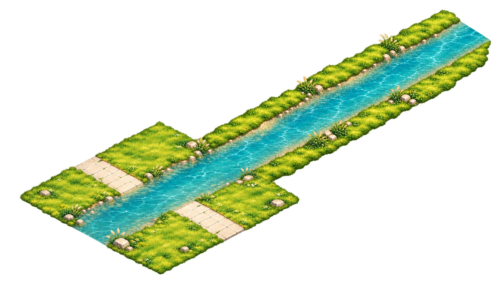
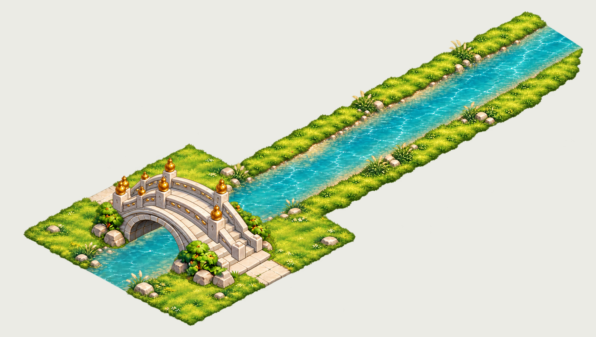
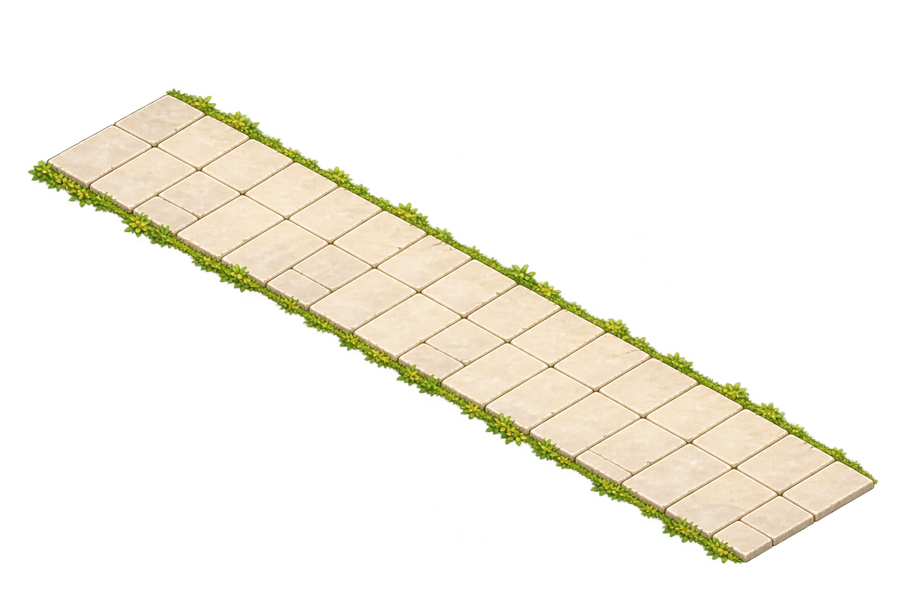
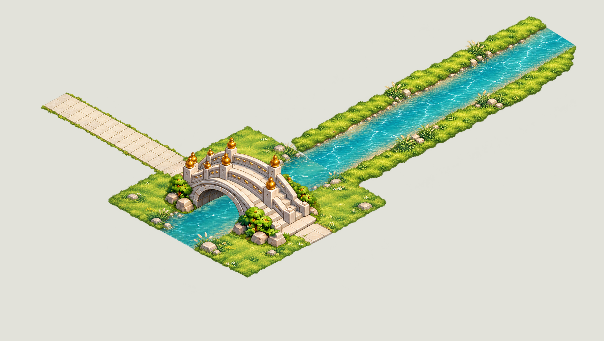
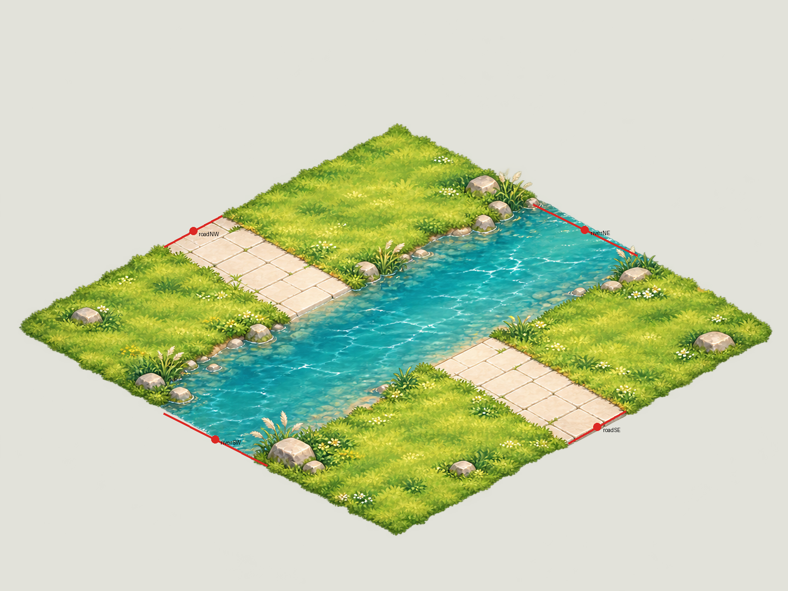

桥头、石路与河岸 r2
当前选用04连续底板，已修复原内部河道斜切接缝；桥独立分层并重测落位。不是无缝tile，未运行Unity/导航验收。修复与映射报告
当前原生连续地面 1665×944，无桥
独立桥两层603×603，[223,314]，静态装配检查
修后局部：原斜切线消除首阶段3图与历史失败证据
01-crossing-underlay-v1 · 1448×1086 · STATIC_ASSEMBLY_CANDIDATE02-stone-road-decal-v1 · 1536×1024 · DECAL_CANDIDATE_WITH_VISIBLE_JOINT
03-riverbank-extension-v1 · 1586×992 · FAIL_CROSSING_SEAM_KEEP_STANDALONE_CANDIDATE桥头人工装配候选：桥0.905显示，[272,91]未通过旧位置：桥洞下露出石路三件组合，显示变换已记录；河道接缝FAIL
石路接口近照：板缝可见河道接口近照：明显水色色差及斜切线FAIL人工估计边口，仅美术装配数据